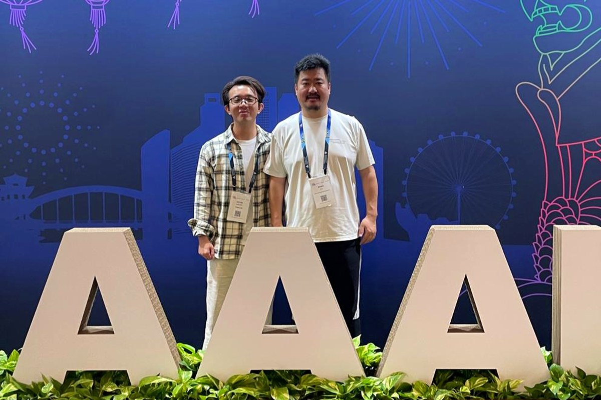

美国人现在问 AI 该买什么。 Touchigh 让答案里有你的店。
我们让你的独立站被 ChatGPT、Perplexity、Google AI 答案引用，再帮你写好、发好美国社媒、文章和广告。你只需要在后台看着它跑，而不用养一支美国团队。

由 SOMIN 引擎驱动——它已经在为全球最大的品牌和代理商跑营销：
不是效果图，是 Touchigh 真的在跑。
点开下面任意一项，看真实的产品把它做完——和你接入店铺后看到的，是同一套界面。
没人把它们打包卖给你。
SEO、GEO 和美国社媒跑在同一套策略上，发布前先测量，价格还让巨头够不着。
产品 01 · GEO 自动驾驶让 AI 答案，处处引用你。
蓝色链接已经不是首页了。GEO 自动驾驶让你的店被美国买家真正在问的 AI 引擎引用，还帮你盯着引用份额往上走。
- ✓看清你在 ChatGPT、Perplexity、Google AI、Gemini 里哪儿隐身
- ✓Touchigh 起草并上线修复：落地页、答案、实体信息
- ✓程序化 GEO 文章，跟着上升查询实时生成
- ✓每条内容上线前，先做点击潜力预测

人人都在自动化 SEO，却几乎没人给出海卖家他们真正要的东西：可信的增长。
我们扒了四条战线上每个主要玩家的内容：AI-SEO 工具、AI 可见性阵营、社媒自动化，还有中国跨境卖家。同一个空白反复出现。Touchigh 就是为了坐进这个空白而做的。
AI 答案站不住脚
在这个品类里，超过 80% 的 AI 答案无法验证。拿得出真凭实据，就是切入口。
玩家一堆，没人投西方
十二个中国增长玩家在厮杀，却没一个在西方投付费媒体。那条道，空着。
一成的量，拿三成半互动
面向中小卖家的增长内容只占对手发布量的一成，却拿走三成半的互动。供给少，回报高。
对手没人能证明有效
人人都在自动产出「有网感」的帖子，却没人能在发出去之前告诉你哪条有效。Touchigh 可以。
当每个信息流都被 AI 同质内容填满，一样的东西就被无视了。
现在约 87% 的社媒内容都挤在同一个「真实感」套路里，互动被摊薄；超过 80% 的 AI 答案无法验证。用户划走，答案引擎也悄悄不再引用那些和别人一模一样的内容。
Touchigh 反着来。 它先给每条内容打分，最后发出去的都是有差异、有据可依、值得被引用的内容，而不是又一条撞脸的东西。
这正是 SOMIN 引擎发表于 ACM SIGIR 的研究：对抗内容同质化。阅读论文 →先诊断，再自动，最后有据可查。
诊断
第一天你就看清：你的店在美国 AI 搜索里哪儿隐身，社媒哪儿掉链子。
自动
Touchigh 起草并上线修复内容、GEO 文章、社媒和广告。每条上线前都带一个效果预测分。
验证
你的 AI 引用份额、点击潜力和互动被持续追踪，让你能拿数据证明提升，而不是靠猜。
美国人「找东西」正搬到 AI 上，而且更能转化。
以上数据综合自 Touchigh 的四份竞品内容研究（由 SOMIN 引擎测量，2025 年年中起，为年内数据、未与上一年基准核验，标注 UNVERIFIED），以及 2026 年 7 月经网络核验的市场评估。效果预测为发布前的语料模式代理指标，不代表保证结果。
像本土品牌一样卖进美国，不用养美国团队。
货和价你都有，缺的是可信的美国曝光。Touchigh 给你一套地道英文、读起来就像本土品牌的 AI 搜索与社媒存在，靠数据、不靠猜。
服务被所有人略过的卖家
不是又一个只会堆量的工具，而是行业忙着卖 AI 可见性功能时落下的那块可信增长。
花钱之前先有证据
先给每条内容打分，再报告 AI 引用份额和点击潜力。在一个八成 AI 答案不可信的市场里，这是诚实的做法。
一套流程，两个增长引擎
SEO、GEO 和社媒全自动、可量化，每月 $500 以内，巨头跟不起。

Zhao Kui，Touchigh 创始人兼 CEO，摄于新加坡 AAAI 大会。
Touchigh 由 AI 研究者 Zhao Kui 带队。
他在 ACM SIGIR、AAAI 等顶级 AI 会议发表论文。Touchigh 靠的不是营销话术，而是经过同行评审的 SOMIN 引擎，这是发表于 ACM SIGIR 的研究。
- ✓论文《SOMIN: Agentic AI…》经 ACM SIGIR 同行评审
- ✓背靠 SOMIN——服务 P&G、Nestlé、Audi 等的引擎
- ✓获评 Gartner 营销 AI「酷公司」
用大白话讲，Touchigh 是什么。
Touchigh 是一款面向进入美国市场的中国跨境电商卖家的 AI 搜索可见性与社媒自动驾驶。它让你的店被 ChatGPT、Perplexity、Google AI Overviews 等美国 AI 答案引擎引用，并帮你撰写、发布美国社媒、文章和广告，每条内容都先做效果预测。它由经过同行评审的 SOMIN 引擎驱动，每月 $500 起。
Touchigh 是做什么的？
它跑两个自动驾驶、共用一套策略：GEO 自动驾驶让你被 AI 答案引用，社媒自动驾驶撰写并排期你的美国社媒和文章。两者都在内容发布前做效果预测。
它给谁用？
有货、有价，但缺可信美国曝光、缺本土语感存在的中国中小企业和跨境电商卖家。
它有什么不一样？
它把 GEO 和美国社媒一起做，花钱前先给每条内容评分，每月 $500 以内。Semrush、Ahrefs 这类做关键词和外链的工具，在 AI 答案时代给不了这些。
多少钱、多久见效？
每月 $500 起。诊断是即时的，评分后的内容当周就开始上线，AI 引用份额从那时起被持续追踪。
大家常问的问题
什么是 GEO（生成式引擎优化）？
GEO 就是让你的生意被 ChatGPT、Perplexity、Google AI Overviews 等 AI 答案引擎引用，而不只是排在传统蓝色链接里。当买家问助手、而不是敲关键词，成为 AI 引用的来源就是新的首页。Touchigh 的 GEO 自动驾驶帮你找出隐身盲区、起草并上线修复，并追踪你的 AI 引用份额。
GEO 对中国出海卖家为什么重要？
美国消费者越来越多地通过问 AI 助手来发现商品。2025 节日季 AI 助手给美国零售带来的引荐大幅增长，转化也明显高于平均。对在美国没有品牌基础的中国卖家，被 AI 答案引用是不砸大预算就拿到可信曝光的最快路径。
Touchigh 和 Semrush、Ahrefs 有什么不一样？
传统 SEO 工具给你关键词和外链。Touchigh 是为 AI 答案时代、也为被忽视的卖家做的：GEO 和美国社媒一起做、全程自动，还在你花钱前给每条内容做效果预测，每月 $500 以内、巨头跟不起。
你们支持哪些 AI 引擎和平台？
GEO 自动驾驶覆盖主流 AI 答案引擎，包括 ChatGPT、Perplexity、Google AI Overviews、Gemini 和 Copilot。社媒与广告自动驾驶为你店铺在用的、面向美国的平台和渠道产出并排期内容，包括 Meta、Amazon 和 Google。
你们写地道英文内容吗？
写。Touchigh 就是为出海美国的中国卖家做的，产出地道美式英文的帖子、文章和广告，让你的店在消费者和 AI 引擎眼里都像本土美国品牌。
Touchigh 多少钱？
GEO + 社媒组合每月 $500 起，只是美国代理商月费的零头，还内置测量和自动化。预约 30 分钟沟通，拿一套匹配你商品目录的方案。
多久能见效？
可见性诊断是即时的。第一天你就能看到自己在美国 AI 搜索里的隐身盲区。自动修复和评分后的社媒同一周就开始上线，AI 引用份额和互动被持续追踪，让你能证明提升。
「效果预测评分」是什么意思？
在内容发布前，Touchigh 用 SOMIN 引擎预测它的点击率和互动，让你只上线最可能拿到点击的内容。这是花钱之前的证据。预测分是发布前的语料模式代理指标，不是保证。
Touchigh 背后是谁？
Touchigh 由 AI 研究者 Zhao Kui 带队，他在 ACM SIGIR、AAAI 发表论文。它跑在经过同行评审的 SOMIN 引擎上，而 SOMIN 服务包括 P&G、Nestlé、Audi 及各大代理集团在内的品牌和代理商。
美国社媒，发出去之前先过一遍。
你的整个美国社媒交给它：选题、撰写、排期、发布。它不拼数量——每条帖子先拿到互动预测分，弱的根本发不出去。
- ✓地道美式英文的帖子、文章和创意，契合品牌
- ✓思想领导力与自然内容，写得像真人在说话
- ✓每条帖子排期前都带一个互动预测分
- ✓你可以逐条批准，也可以让它自动发布
让社媒进入自动驾驶 →